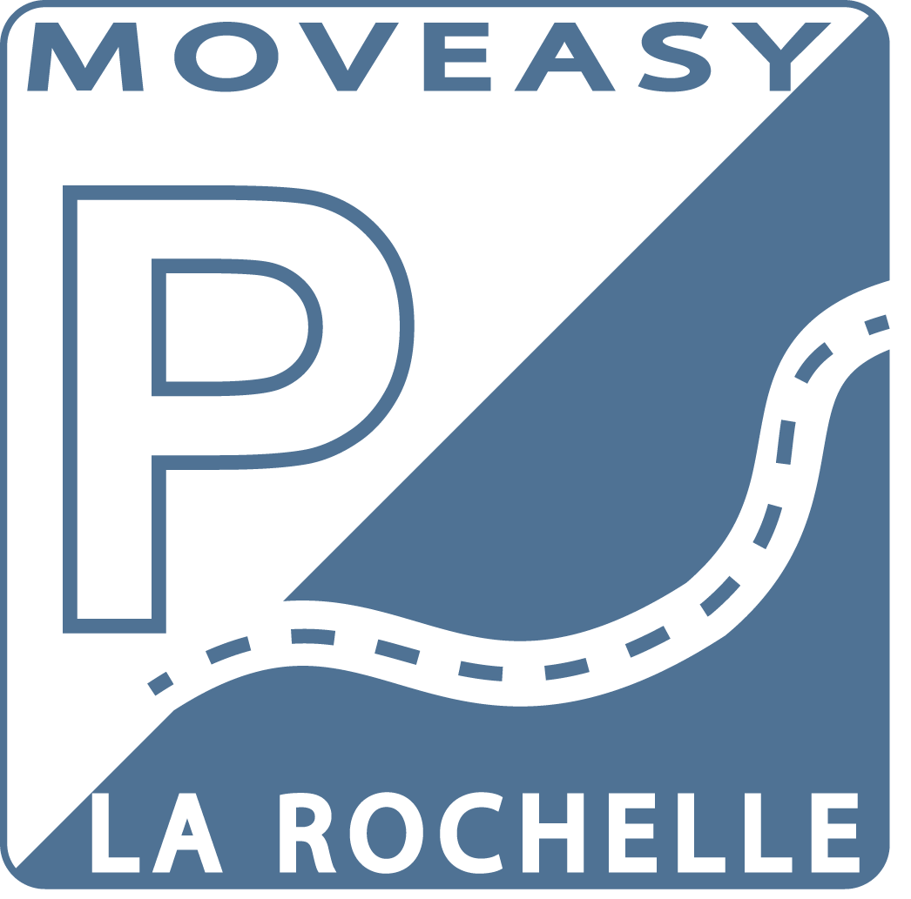

Version MovEasy 1.0
Préambule :
« MovEasy LR » est une application mobile réutilisant les données libérées par l’Open Data de la Ville de La Rochelle. Il s’agit d’une application qui facilite le stationnement des touristes et des riverains. Elle est gratuite et s’utilise sur smartphones et tablettes de type Androïd.
« MovEasy LR » offre deux type de fonctionnalités :
- « L'espace principal » permet de visualiser et situer les parkings et les horodateurs sur la ville de La Rochelle mais aussi de connaitre la disponnibilité en temps réel des parkings Encan, Saint Jean D’Acre, Verdun et du Vieux Port
- Il contient aussi des outils GPS permettant de positionner sa voiture a son emplacement, renvoyer un itinéraire pour accéder au parking souhaité. Attention, ces fonctionnalités nécessite l'utilisation de la géolocalisation et une connection internet facturable par votre opérateur.
Aide :
« Espace principale » :
L'application se présente par une page principale cartographique. :
Balayez du bord gauche de l'écran vers le bord droit pour accéder à la légende, les paramètres, l'aide et quitter :
Balayez du bord droit de l'écran vers le bord gauche pour accéder aux différentes couches proposées. :
La partie « Couche » permet de choisir l’une des couches d’informations géographiques suivantes :
- tous les parkings,
- les parkings gratuits,
- les parkings payants,
- les parkings relais,
- les horodateurs.
En dessous, vous pourrez choisir entre les fonds de carte suivant :
- carte OpenStreetMap,
- Photo aérienne.
Cliquez sur l'une des couches pour les faire apparaitre sur la carte.
Cliquez sur les markers de parking pour ouvrir une popup de détail.
La popup contient les informations du parking sélectionné ainsi que:
- le bouton d'accés à la fiche de détails complète du parking ,
- le bouton d'itinéraire vers le parking sélectionné via Google Maps .
La fiche de détail d'un parking contient:
- le bouton pour le mettre ou l'enlever du mode favori
- ses informations complètes
- le bouton "emmène-moi" pour lancer l'itinéraire via Google Maps
Le bas de la page principal contient plusieurs boutons:
- permet de taguer sa voiture à son emplacement,
-  permet de localiser son emplacement,
permet de localiser son emplacement,
- permet d'afficher uniquement les parkings favoris,
- permet d'afficher tous les parkings,
- permet de recentrer la carte sur le centre de La Rochelle et un zoom général sur la ville.
En cliquant sur légende, une liste présente l'ensemble des markers utilisés et leurs significations.
La page de paramètres permet de configurer le temps de rafraichissement du taux de disponibilité des parkings, l'activation ou la désactivation du rafraichissement automatique et la localisation GPS et
Contact :
Pour toute question, anomalie constatée ou pour suggérer une amélioration, merci de contacter : moveasylr@gmail.com
Mentions légales :
Cette application a été développée dans le cadre d’un partenariat entre la Ville de La Rochelle et l’Université de La Rochelle. Elle résulte pour partie d’un travail de projet tutoré d’étudiants de la Licence Universitaire Professionnelle Système d’Information Géographique et de la Licence Universitaire Professionnelle Informatique Répartie et Mobile. Les données relatives aux itinéraires sont élaborées par GOOGLE MAPS.
Elle a pour but de proposer un ensemble d’outils d’aide à l’attention des touristes et des riverains. Elle ne saurait en aucun cas être tenue responsable des erreurs, des problèmes techniques rencontrés, ou de toute interprétation des informations présentées ainsi que des conséquences de leur utilisation.
Nous ne collectons pas d'informations personnelles.
« MovEasy LR » utilise (pour ce qui concerne la majeure partie des couches d’informations) les données libérées par l’OpenData de la Mairie de La Rochelle ; celles-ci sont soumises au champ d’application d’une licence de type ODBL (Open DataBase Licence).
